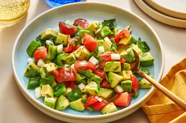

Avocado Salad

What is avocado salad
This avocado salad is a delicious combination of creamy avocados, sweet and juicy tomatoes, bell pepper, cilantro, and fresh lime juice for an easy summer salad full of bold, fresh flavor and color
Ingredients
- 2 peeled, pitted, and diced avocados
- 1 chopped sweet onion
- 1 chopped green bell pepper
- 1 chopped ripe tomato
- 1/4 cup Chopped cilantro
- 1/2 cup Fresh lime juice
- Fresh lime juice
Steps
- Gather the ingredients
- Combine avocados, onion, bell pepper, tomato, cilantro, and lime juice in a large bowl.
- Gently toss until evenly coated. Season with salt and pepper
- Enjoy!
Home